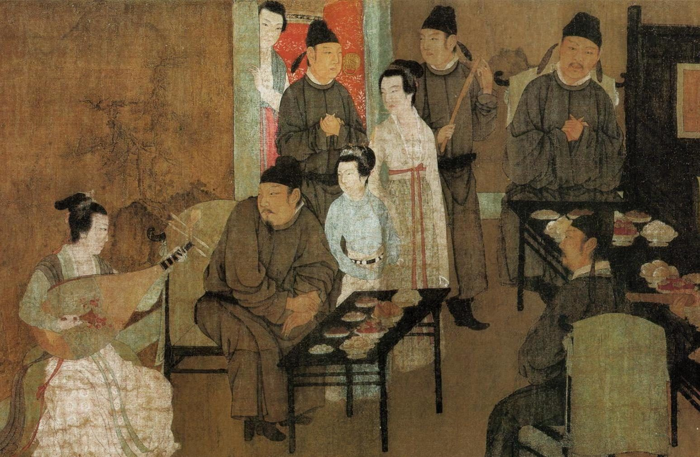
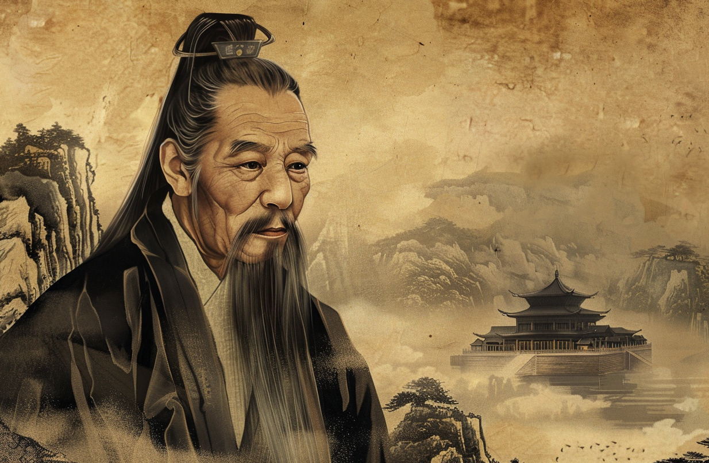

Hánfēizǐ
A Chinese philosophical pessimist
Most classical Chinese philosophers accepted a moral history of humankind. Humankind, originally, suffered a miserable existence. Life was precarious. Starvation, storms, wild animals, and more contributed to anxious struggles to survive. Things changed with the sages – a series of culture-bearing geniuses who established the practices and institutions of civilized life, like literacy, agriculture, and the elaborate rituals of social life. From then on, life became peaceful and prosperous, a cultural and moral ‘golden age’.
This romanticised vision of the past contrasted, alas, with the dire realities of the Period of the Philosophers, from roughly the fifth to the third centuries BCE. It was also the Period of the Warring States – the two hundred years of warfare, treacherous scheming and misery that ended when the Qin dynasty unified China. Philosophy in China was shaped by these realities, especially when it came to the practical question of the best response to the chaos of the world. Many schools advocated a kind of ‘return’ to the earlier ideal state. Moral progress, for them, meant returning us to the original state of moral excellence initiated by the sages.

Progress meant going back to what we once were, even if the philosophers had different ideas about the earlier stage and the best way to return to it. Confucians advocated the restoration of the rituals and life of the Zhou Dynasty. ‘I am for the Zhou’, as Confucius announced, since it was, in his judgment, the best realisation of that earlier life. (One eminent scholar calls this ‘revivalist traditionalism’).
By contrast, Zhuāngzǐ interpreted that ritualised form of life as the source of the deterioration, rather than its means of rectification. Rituals, elaborate arts and learning are systems of ‘artifice’, apt to corrupt our inborn spontaneity and goodness. Other schools – the Mohists and Yangists – offered their own views, as did others now lost to us.
‘Legalism’
Ideals of return to the past were decisively rejected, however, by the last great figure of the classical period, Hánfēizǐ. An erudite thinker, he is usually classified as a ‘Legalist’ – a group of thinkers, including Shen Buhai and Lord Shang, whose work Hánfēizǐ synthesised.
As a group, their ethos was what political theorists today call ‘realism’ – an emphasis on the conflictual character of real-world political life. Conflict, plots, schemes and continuous calculations of opportunity and risk inform political relations within and between states. Scheming and treachery drive political life, which puts a premium on cleverness, adaptation, and strategy – the definitive European champion of political realism is Machiavelli.
Hánfēizǐ advocated a realist political philosophy and its aim was the establishment of order. The function of the state is to survive – to suppress internal strife and resist external aggression.

In our societies, an impressive array of vices is on display. Hypocrisy, greed, cruelty, prejudice… But what if many of these vices were necessary for human life?
Strife and aggression are inevitable, for Hánfēizǐ, for ultimately anthropological reasons. Human beings, alas, are essentially self-interested. Our dispositions are powerful and, unless checked, manifest in the vices and failings. Treacherousness, selfishness, brutality, greed, dishonesty are unattractive but ineradicable, which was a lesson taught to Hánfēizǐ by the Confucian Xúnzǐ, for whom our ‘desires’, if not satisfied, feed ‘struggle’ and give rise to the vices that lead to ‘chaos’. The function of rituals is not to draw out our inbuilt goodness, but to restrain and train our desires The wisdom of the sages, said Xúnzǐ, was to establish ‘rituals and the standards of rightness’.
This gritty vision was unpopular with Confucians, but it resonated with Hánfēizǐ and the other ‘Legalists’. The intelligent ruler acknowledges our desirous, unruly dispositions, building policies around that fact. Better, said Hánfēizǐ, to recognise most people are ‘crooked’ – and in need of ‘straightening out’ – than indulging in the naive idealism of sugar-coating Confucian talk of the beauty of ritual. Worse still, such naiveté obscured important, if disturbing moral facts about the world. Hánfēizǐ noted, for instance, the evil practice of female infanticide:
When it comes to their children, parents who produce boys get congratulations but those who produce girls kill them. Both came from the bodies of their parents, but the boys occasion congratulations while the girls are killed. This is due to their reckoning of benefits and calculations of profit. Thus, even parents in dealing with their children use a calculating heart.
The abandonment or killing of children was not unique to China. Hánfēizǐ’s point is that Confucians celebrated the moral importance of filial dispositions but failed to mention this social fact. The Book of Odes had already noted preferential treatment of boys in Ode 189. While child abandonment was officially illegal, unofficially it was tolerated. While Hánfēizǐ doesn’t deny the realities of parental love and affection, they must be understood in the context of a more complicated account of human psychology. Calculation, self-interest, and cruelty must be factored into our understanding of and dealings with one another.

Gu Hongzhong: The Night Revels of Han Xizai. 10th century. Palace Museum, Beijing, China (detail).
The majority of Hánfēizǐ’s writings describe the sort of political systems that, in his judgment, would create an enduring political order. The Book of Hánfēizǐ offers historical examples, criticisms of rival systems, caustic criticisms of the causes of disorder – the ‘vermin’, such as scholars, who gnaw away at the state – and elaborate institutional proposals. Ruling requires, for instance, an abandonment of ‘stupid’ confidence in ‘old ways’, that only worked – if they ever did – under different social conditions. When the population is small, no-one needs to compete for resources – but bigger populations mean anxiety and struggle. What worked then may not work now.
Hánfēizǐ criticised ‘fainthearted’ rulers unable or unwilling to ‘adopt reforms’ and castigated Confucians who neophobically cling to old ways. New times create new problems that require new solutions. Government requires order and power, to ‘assign offices based on a person’s qualifications … hold them accountable for the actual results’ and stop ministers ‘encroaching on each other’s office’. Defined duties, coherent laws, and clear understanding that one’s conduct will incur rewards or punishments – the ‘two handles’ – are integral to these systems of government.
Hánfēizǐ often sounds optimistic about the efficacy of his system, if it were implemented. Worthy ministers are promoted. The ‘vermin’ are eradicated. If the rulers ‘hold to the law … there will be order’. Governance will remain a difficult task demanding continuous vigilance and adaptation. We remain, after all, self-interested and desirous creatures – in all of China there exist no more than a dozen virtuous people, declared Hánfēizǐ. But an ordered state can be established and maintained. Power and method and realism, if kept to, help a ruler ‘get rid of private crookedness … his people will become secure and [the] state will become well-ordered’.
Your ad-blocker ate the form? Just click here to subscribe!
Pessimism
Is Hánfēizǐ as optimistic as this account might suggest? It is usual for scholars to describe him as a ‘pessimistic’ – about, say, the chances of people becoming genuinely good on a large-scale. Unfortunately, ‘pessimism’ is an ambiguous term, with differing popular and technical senses. Being pessimistic could mean having a gloomy personality, for instance, or being disposed to see one’s glass as half empty rather than half-full. Pessimism can also be a metaphysical thesis, perhaps the opposite of Leibniz’s doctrine of Optimism – ridiculed by Voltaire. For Schopenhauer, famously, ours is the ‘worst of all possible worlds’. None of these seem to fit Hánfēizǐ. We’re not assessing his moods and there is, as far as I know, little information on his personality. Moreover nothing in The Book of Hánfēizǐ conforms to that metaphysical thesis. In any case, pessimism is not, in its philosophical senses, a matter of personality traits and need not be tied to post-theistic metaphysics. If we want to determine if Hánfēizǐ was a pessimist, we need a better definition of philosophical pessimism.
A natural place to look would be the scholarship that emerged, over the last decade or so, that takes seriously pessimism as a theme in the history of philosophy. This work includes Frederick Beiser’s Weltschmerz, Joshua Foa Dienstag’s Pessimism and, most recent, Mara van der Lugt’s Dark Matters. While excellent studies, none discuss classical Chinese philosophy – fair enough, for their foci are European philosophical pessimisms. The specific doctrines are products of European religious and intellectual history, even if some, like Schopenhauer’s, have Indian inspiration, too. Classical Chinese pessimisms belong to a different tradition. But we can use the scholarship on European pessimism and get a working definition in place.
Philosophical pessimism is a judgement or appraisal passed on the human condition. It is a dark and negative judgment, of course, consisting of two convictions: the human condition contains features hostile to happiness, flourishing or contentedness and – the second feature – there is little or no real chance of the features changing, or being changed, for the better. Of course, pessimistic philosophers offer different specific accounts of these general convictions. The relevant features of the human condition could be absurdity, suffering or dukkha, grief or the fragility of all that we care about. For the Buddha one basis for pessimism is the inescapability of dukkha, and the grim fact that ‘sorrow, lamentation, pain…and despair’ are inextricable from human life. Others offer different articulations of the sources and detail of the human condition. To be philosophically pessimistic is to endorse these two convictions, and then find ways of coping with this conclusion.

Pessimism today has an ambivalent status. On the one hand, even a cursory glance at the world reveals a depressing abundance of dreadful events, tendencies, and phenomena.
If Hánfēizǐ a philosophical pessimist in this sense? Well, before answering that question, a clarification is needed about pessimism. It’s nowadays typical to think of optimism and pessimism are opposed stances. It will make sense, for most people, to ask someone ‘Are you an optimist or a pessimist?’ But this is a mistake. There is no dualism of ‘optimism vs pessimism’. Most serious philosophical accounts of the human condition, such as Schopenhauer’s and the Buddha’s, are too complex to accommodate such crude dualisms. No serious philosophical pessimist thinks the human condition is all bad. Beauty, virtue, and love may be rare and fragile achievements, but they can exist. Schopenhauer speaks of aesthetic experiences, for instance, and the Buddha’s suttas acknowledge the possibility of virtue. Doctrines like theirs are composites of pessimisms and optimisms – optimistic about some things, pessimistic about others, and, moreover, are optimistic and pessimistic to different degrees. So, the Buddha, for example, thinks enlightenment is possible, but only for a tiny minority, and only after enormous discipline and effort. Most are doomed to remain in a ‘cankered’, unenlightened state. The human condition is a bad one, except for those few enlightened beings, who have ‘left the human world behind’.
So, we should ask whether Hánfēizǐ’s account of the human condition is pessimistic, not to distinguish it from a more optimistic one, but to determine if it is one in which pessimisms predominate.

Hanfeizi, imagined by Midjourney.
Precariousness
Here are three reasons to judge that Hánfēizǐ is pessimistic in this sense.
To start with, his account of our general condition is a bad one. Human life is unstable, turbulent – an endless effort to adapt to changing circumstances. Just as we start to understand things enough to manage them, they’ve already begun to change. Our condition is one of constant epistemic and practical uncertainty. Second, the anxieties integral to our condition feed the vices that worsen human life. Arrogance, dogmatism, competitiveness, self-centredness – all are adaptations to uncertainty, vicious responses to an imperfect world. Treacherousness, for instance, makes sense in a world where existing allegiances may lose their effectiveness if and when conditions change. Loyalty and trust only make sense in calmer times, while a ‘calculating heart’ is perpetually relevant.

Humans are constitutively incapable of virtuous forms of life. Posthumans, of course, can aspire to much more.
The precariousness of human life and the vices and failings it sustains take us some way towards pessimist conclusions. Our condition is marked by anxieties and uncertainties, caused by the changing conditions of life and the immense difficulties of knowing how to adapt, let alone flourish.
To make this worse, our viciousness, at the interpersonal and social levels, exacerbates these difficulties. Most people are ‘crooked’ – stupid, corrupt or some combination of these – and it’s extremely hard to ‘straighten’ them out into usable form. Goodness, for Hánfēizǐ, is fragile – in the sense of being hard to create and sustain, but also fairly insubstantial. Confucius was ‘a great sage of the world’ – an exemplar of virtue – but while everyone was ‘pleased by his benevolence’, only seventy followed him. So, our condition is dominated, alas, by anxieties, frustrations, suspiciousness, worries, and other features destructive of a sense of contentment and security. Moreover, our entrenched vices mean that we are unlikely to better our condition – we are stupid, cruel, and deceitful in ways that preclude the formation of trusting and cooperative conditions that would make life better. Our condition, then, is, and will remain, very bad.
If this is right, Hánfēizǐ was a pessimist. While there is the limited optimism of thinking we could ‘manage’ human life, the overall picture is negative. Crooked and corrupt people. An unstable world. Transient solutions, constant struggle and pervasive uncertainty. Put in this way, he could have been describing the modern world. As one translator put it, The Book of Hánfēizǐ ‘shocked’ generations of readers, but ‘there has never been an age when the book was unread’. One reason is that what it describes is not the particular condition of people of the Period of the Warring States in China. It describes the human condition and its perennial features – violence, corruption, self-centredness, and stubborn stupidity. To see the endurance of these failings in our own world is, surely, to confirm the pessimism of Hánfēizǐ.
◊ ◊ ◊

Ian James Kidd on Daily Philosophy:
Quotations from The Book of Hánfēizǐ are from Joel Sahleen’s translation in Philip J. Ivanhoe and Bryan W. van Norden (eds.) Readings in Classical Chinese Philosophy, 2nd ed. (Indianapolis, Hackett, 2001).